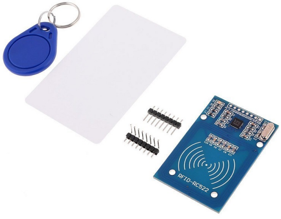

Note
Bonjour et bienvenue dans la communauté SunFounder Raspberry Pi & Arduino & ESP32 sur Facebook ! Plongez plus profondément dans le monde de Raspberry Pi, Arduino et ESP32 avec d’autres passionnés.
Pourquoi rejoindre ?
Soutien d’experts : Résolvez les problèmes après-vente et les défis techniques avec l’aide de notre communauté et de notre équipe.
Apprendre & Partager : Échangez des astuces et des tutoriels pour améliorer vos compétences.
Aperçus exclusifs : Accédez en avant-première aux annonces de nouveaux produits.
Réductions spéciales : Profitez de réductions exclusives sur nos nouveaux produits.
Promotions festives et tirages au sort : Participez à des promotions et des tirages au sort lors des fêtes.
👉 Prêt à explorer et créer avec nous ? Cliquez sur [Ici] et rejoignez-nous dès aujourd’hui !
2.2.7 Module RFID MFRC522
Introduction
La Radio Fréquence Identification (RFID) désigne les technologies qui utilisent la communication sans fil entre un objet (ou une étiquette) et un appareil d’interrogation (ou lecteur) pour suivre et identifier automatiquement ces objets.
Parmi les applications les plus courantes de cette technologie, on trouve les chaînes d’approvisionnement dans le commerce de détail, les chaînes d’approvisionnement militaires, les méthodes de paiement automatisées, le suivi et la gestion des bagages, le suivi des documents et la gestion pharmaceutique, pour n’en nommer que quelques-unes.
Dans ce projet, nous utiliserons la RFID pour la lecture et l’écriture.
Composants

Principe
RFID
La Radio Fréquence Identification (RFID) désigne les technologies qui impliquent l’utilisation de la communication sans fil entre un objet (ou une étiquette) et un appareil d’interrogation (ou lecteur) pour suivre et identifier automatiquement ces objets. La portée de transmission de l’étiquette est limitée à quelques mètres du lecteur. Une ligne de vue dégagée entre le lecteur et l’étiquette n’est pas forcément nécessaire.
La plupart des étiquettes contiennent au moins un circuit intégré (IC) et une antenne. La puce stocke les informations et gère la communication en radiofréquence (RF) avec le lecteur. Les étiquettes passives ne possèdent pas de source d’énergie indépendante et dépendent d’un signal électromagnétique externe, fourni par le lecteur, pour alimenter leur fonctionnement. Les étiquettes actives, quant à elles, contiennent une source d’énergie indépendante, telle qu’une batterie. Elles peuvent ainsi avoir des capacités de traitement, de transmission et de portée accrues.
MFRC522
Le MFRC522 est un type de puce intégrée pour la lecture et l’écriture de cartes. Il est couramment utilisé dans les radios à 13,56 MHz. Lancé par la société NXP, il s’agit d’une puce pour cartes sans contact à faible tension, faible coût et petite taille, un choix idéal pour les instruments intelligents et les appareils portables.
Le MF RC522 utilise un concept avancé de modulation et de démodulation qui est pleinement représenté dans tous les types de méthodes et protocoles de communication sans contact passifs à 13,56 MHz. De plus, il prend en charge l’algorithme de cryptage rapide CRYPTO1 pour vérifier les produits MIFARE. Le MFRC522 prend également en charge la série MIFARE pour une communication sans contact à haute vitesse, avec un débit de transmission bidirectionnelle pouvant atteindre 424 kbit/s. En tant que nouveau membre de la série de lecteurs de cartes hautement intégrés à 13,56 MHz, le MF RC522 est très similaire aux MF RC500 et MF RC530 existants, mais présente également de grandes différences. Il communique avec la machine hôte via un mode série, nécessitant moins de câblage. Vous pouvez choisir entre les modes SPI, I2C et UART série (similaire à RS232), ce qui permet de réduire les connexions, d’économiser de l’espace sur la carte PCB (taille plus petite) et de réduire les coûts.
Schéma

Procédures expérimentales
Étape 1 : Construisez le circuit.

Étape 2 : Configurez le SPI (référez-vous à SPI Configuration pour plus de détails. Si vous avez déjà configuré le SPI, passez cette étape.)
Pour les utilisateurs de langage C
Étape 3 : Accédez au dossier du code.
cd ~/davinci-kit-for-raspberry-pi/c/2.2.7/
Étape 4 : Compilez le code.
make read
make write
Note
Il existe deux exemples pour vous permettre de lire ou d’écrire l’ID de la carte, et vous pouvez choisir celui dont vous avez besoin.
Étape 5 : Exécutez le fichier exécutable.
sudo ./read
sudo ./write
Note
Si cela ne fonctionne pas après l’exécution, ou s’il y a un message d’erreur : "wiringPi.h: No such file or directory", veuillez consulter C code is not working?.
Explication du code
InitRc522();
Cette fonction est utilisée pour initialiser le module RFID RC522.
uint8_t read_card_data();
Cette fonction est utilisée pour lire les données de la carte, et si la lecture est réussie, elle renverra « 1 ».
uint8_t write_card_data(uint8_t *data);
Cette fonction est utilisée pour écrire les données sur la carte et renverra « 1 » si l’écriture est réussie. *data est l’information qui sera écrite sur la carte.
Pour les utilisateurs de langage Python
Étape 2 : Activation de l’environnement virtuel.
Note
Avant d’activer, vous devez vous assurer que vous avez créé un environnement virtuel, veuillez consulter Créer un environnement virtuel.
Chaque fois que vous redémarrez le Raspberry Pi ou ouvrez un nouveau terminal, vous devrez exécuter la commande suivante pour activer l’environnement virtuel.
source myenv/bin/activate
Une fois l’environnement virtuel activé, vous verrez le nom de l’environnement avant l’invite de commande, ce qui indique que vous travaillez dans l’environnement virtuel.
Étape 3 : Installez les bibliothèques.
La bibliothèque spidev permet de gérer les interactions avec le SPI et est un élément clé de ce tutoriel, car nous en avons besoin pour que le Raspberry Pi interagisse avec le RFID RC522.
Exécutez la commande suivante pour installer spidev sur votre Raspberry Pi via pip.
sudo pip3 install spidev
Continuez l’installation de la bibliothèque MFRC522. La bibliothèque MFRC522 contient deux fichiers : MFRC522.py et SimpleMFRC522.py.
Parmi eux, MFRC522.py est la réalisation de l’interface RFID RC522. Cette bibliothèque gère tout le travail complexe de communication avec RFID via l’interface SPI du Pi.
SimpleMFRC522.py reprend le fichier MFRC522.py et le simplifie grandement en vous permettant de n’utiliser que quelques fonctions au lieu de nombreuses.
sudo pip3 install mfrc522
Étape 4 : Sortir de l’environnement virtuel.
Lorsque vous avez terminé votre travail et que vous souhaitez quitter l’environnement virtuel, exécutez simplement :
deactivate
Cela vous ramènera à l’environnement Python global du système.
Étape 5 : Allez dans le dossier du code.
cd ~/davinci-kit-for-raspberry-pi/python/2.2.7
Étape 6 : Exécutez le fichier exécutable.
sudo python3 2.2.7_read.py
sudo python3 2.2.7_write.py
Note
Après avoir exécuté
2.2.7_read.py, l’identifiantidet letextde votre carte seront affichés dans le terminal.Après avoir exécuté
2.2.7_write.py, vous devez d’abord écrire un message, appuyer surEntréepour confirmer, puis placer votre carte sur le module RFID MFRC522 pour terminer l’écriture.
Code
Note
Vous pouvez Modifier/Réinitialiser/Copier/Exécuter/Arrêter le code ci-dessous. Mais avant cela, vous devez vous rendre au chemin du code source, tel que davinci-kit-for-raspberry-pi/python.
# lecture
import time
from mfrc522 import SimpleMFRC522
import RPi.GPIO as GPIO
reader = SimpleMFRC522()
def main():
while True:
print("Reading...Please place the card...")
id, text = reader.read()
print("ID: %s\nText: %s" % (id,text))
time.sleep(3)
def destroy():
GPIO.cleanup()
if __name__ == '__main__':
try:
main()
# Lorsque 'Ctrl+C' est pressé, la fonction destroy() sera exécutée.
except KeyboardInterrupt:
destroy()
# écriture
from mfrc522 import SimpleMFRC522
import RPi.GPIO as GPIO
reader = SimpleMFRC522()
def main():
while True:
text = input('Please write new data:')
print("Please place the card to complete writing")
reader.write(text)
print("Data writing is complete")
def destroy():
GPIO.cleanup()
if __name__ == '__main__':
try:
main()
# Lorsque 'Ctrl+C' est pressé, la fonction destroy() sera exécutée.
except KeyboardInterrupt:
destroy()
Explication du code
reader = SimpleMFRC522()
Instancie la classe SimpleMFRC522().
reader.read()
Cette fonction est utilisée pour lire les données de la carte. Si la lecture est réussie, l’identifiant et le texte seront renvoyés.
reader.write(text)
Cette fonction est utilisée pour écrire des informations sur la carte, appuyez sur la touche Entrée pour terminer l’écriture. text est l’information à écrire sur la carte.
Image du phénomène